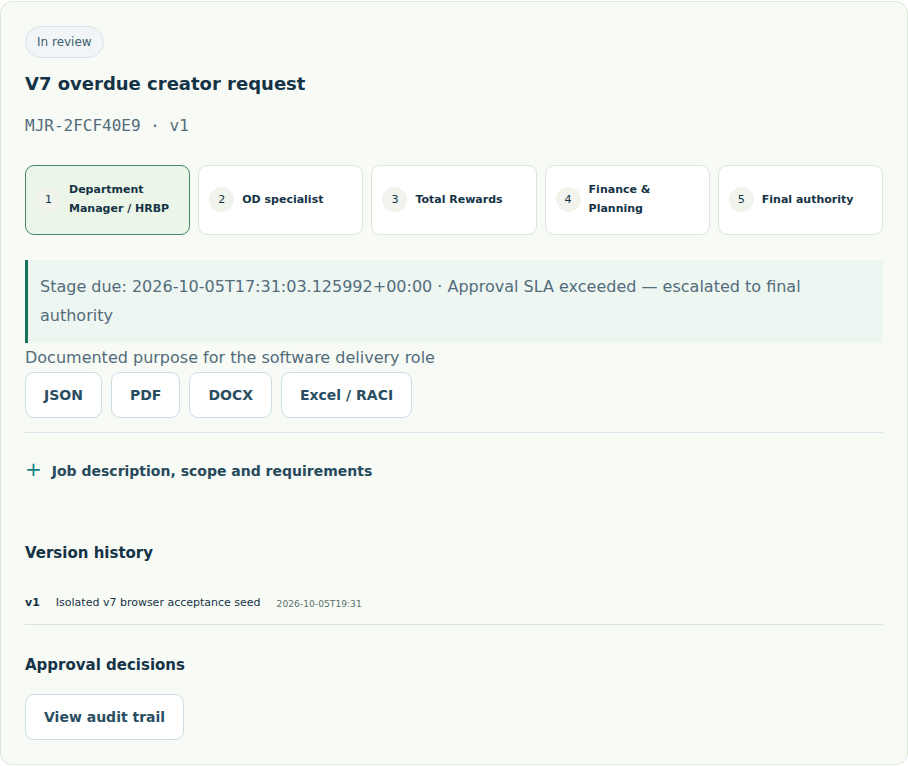
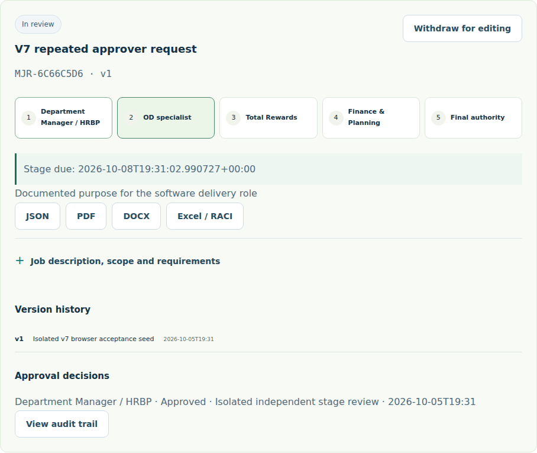
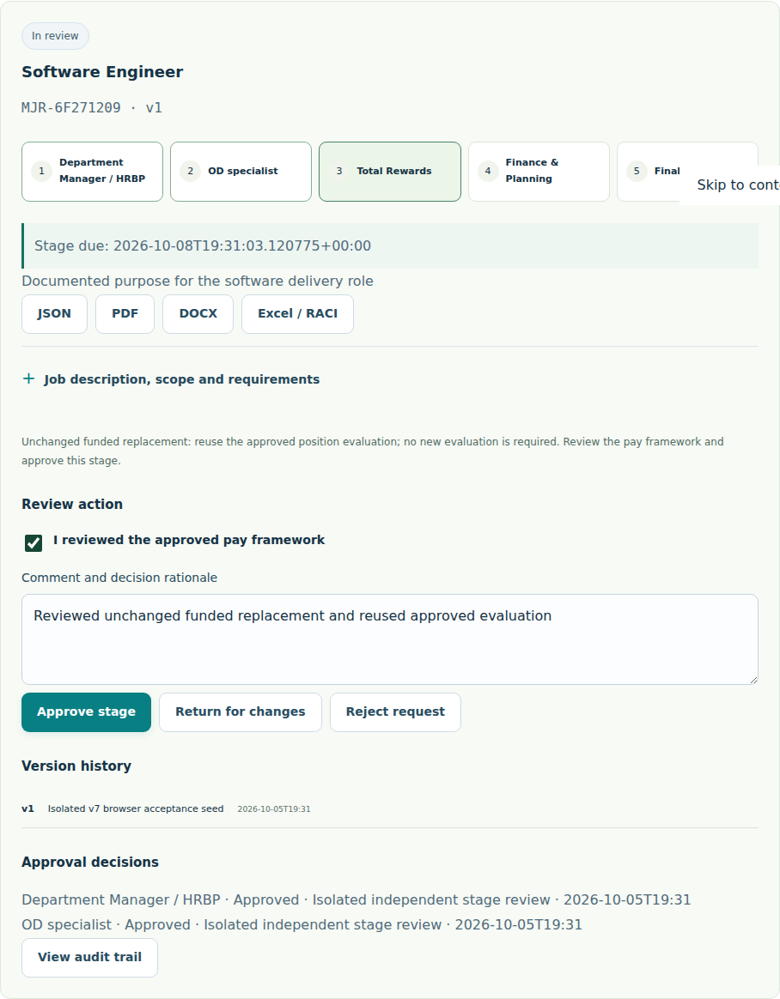

MI’YĀR · v7.0.0 · 2026-10-05
متابعة ملاحظات الخبير — الإصدار السابع
التغييرات المنفذة وكيفية إعادة فحصها، مع تمييز الاختبارات الداخلية عن القبول المستقل.
حالة التسليم
تتضمن هذه النسخة تعديلات البنود الخمسة عشر. يختبر مسار النشر الواجهة والخادم ورحلات المتصفح قبل نشر الموقع، ويشترط توافق نسخة الخادم مع نسخة الواجهة.
يبقى قبول نسب V7-02 وV7-06 وV7-15 مرتبطًا ببيانات الخبير المخفية: 100 وصف وظيفي، و500 مسمى إنجليزي، واختبار تكافؤ مستقل بين اللغتين. لا تُعد نتائج الاختبارات الداخلية إثباتًا لهذه النسب. أدلة حساب المؤسسة الآتية من بيئة اختبار منفصلة؛ يلزم تكرارها في حساب المؤسسة المنشور لإغلاق قبول V7-08 وV7-09 ميدانيًا.
سجل البنود
| البند | التغيير | إعادة الفحص |
|---|---|---|
| V7-01 | حفظ المنصب ونسخته ودرجته، وإضافة اختيار المنصب في التعويضات. | قيّم المنصب إلى G06، افتح التعويضات ثم أعد تحميل الصفحة؛ يبقى اختيار المنصب والدرجة. |
| V7-02 | توسيع مفاهيم الترجمة والمخزون وتطبيقات الجوال، وإضافة المترجم 264301 وأخصائي المخزون 241206 إلى الترشيح. | اختبارات صيغ إضافية بالعربية والإنجليزية؛ اعتماد هدف أول ترشيح ≥85% وفارق اللغتين ≤5 نقاط ينتظر مجموعة الخبير المخفية. |
| V7-03 | منع «حفظ وفتح الطلب» إذا نقص خط الأساس أو المستهدف أو المدة أو بيانات المؤشر اللازمة. تظهر رسالة بجانب الخلية، مع إتاحة حفظ المسودة. | افرغ كل خلية على حدة؛ لا يفتح الطلب، وتُحفظ المسودة دون فقد البيانات. |
| V7-04 | طلب توضيح الحاجة عند إدخال هدف أعمال عام، مثل تقليل الغياب أو خفض التكلفة. | تظهر دعوة لتوضيح العمل المطلوب بدل رسالة نقص غير مناسبة أو اختراع مهنة. |
| V7-05 | ربط تكلفة صاحب العمل بالمنصب والنسخة والدرجة وإظهار الأساسي والبدلات والأعباء. | أساسي شهري 20,000 ريال وأعباء 15% ينتجان 276,000 ريال سنويًا في التعويضات والتخطيط وتصميم المنصب. |
| V7-06 | ربط Director General بالرمز 112002 وHR Manager بالرمز 121202 وتوحيد البحث في الأسماء المقترحة. | المسميات المذكورة مصححة؛ قبول تغطية ≥95% من 500 مسمى ينتظر مجموعة الاختبار المستقلة. |
| V7-07 | إظهار تنبيه لمراجعة النطاق عند تغير الدرجة، وتصحيح المثال إلى 15,000–25,000 ريال. | انتشار نطاق المثال 66.7%؛ تغيير الدرجة ينبه إلى مراجعة النطاق القائم. |
| V7-08 | منع المنشئ أو محرر النسخة من اعتماد طلبه، ومنع الشخص نفسه من اعتماد مرحلتين على الخادم. | اختبارات صلاحيات الخادم تتجاوز إخفاء الأزرار وتتحقق من رفض الطلب المباشر. دليل حساب الاختبار منفصل عن الإنتاج. |
| V7-09 | تصعيد الطلبات المتأخرة تلقائيًا وتسجيل الحدث، وإعادة استخدام تقييم المصدر المعتمد عند إحلال ممول دون تغير النطاق. | اختبار بدء التطبيق يتحقق من التصعيد دون استدعاء يدوي. الإحلال لا ينشئ تقييمًا جديدًا، وتبقى مراجعات الاعتماد والميزانية. |
| V7-10 | نشر جميع المعرّفات في سجل التغييرات وهذه الصفحة. | افتح سجل التغييرات وتحقق من ظهور V7-01 حتى V7-15. |
| V7-11 | استعادة المنصب المختار ومستويات العوامل والأدلة وأسماء المقيمين عند العودة إلى التقييم. | انتقل إلى شاشة أخرى ثم ارجع؛ تبقى المدخلات مرتبطة بالمنصب ونسخته. |
| V7-12 | تمييز الحد الأدنى المانع دون 1,000 ريال سنويًا للفرد عن التكلفة المنخفضة التي تسمح باستثناء موثق. | الاستثناء لا يتجاوز الحد المانع؛ توضح الرسالة هذا الشرط. |
| V7-13 | فصل الحلقة الذاتية عن انعكاس الدرجة ومقارنة عدد المرؤوسين المعلن بعدد المناصب المسجلة تحت المدير. | الحلقة الذاتية تنتج تشخيص دورة فقط؛ اختلاف العدد يظهر كتنبيه مستقل. |
| V7-14 | رفض تكرار الدليل المطابق بعد تسوية الفراغات والتشكيل لأكثر من عاملين في الواجهة والخادم. | إعادة استخدام الدليل نفسه في ثلاثة عوامل ترفض التقييم؛ دليل مستقل لكل عامل يقبل. |
| V7-15 | توحيد مفاهيم السائق والسيارة وCEO في اللغتين وإزالة ترشيح الإدارة العامة الناتج عن ذكر الرئيس كراكب. | اختبارات صيغ سائق سيارة الرئيس تعطي مرجع السائق نفسه؛ قبول تكافؤ ≥95% ينتظر اختبار الخبير المخفي. |
رحلة إعادة الفحص الرئيسية
- في تصميم المنصب، افتح المثال واحفظه وافتح سجله.
- اختره في تقييم الوظائف، أدخل أدلة مستقلة للعوامل، وسجل تقييم اللجنة بدرجة G06.
- افتح التعويضات، تحقق من المنصب والدرجة، واستورد النطاق الذي راجعته. أدخل أعباء 15% واحسب التكلفة.
- أعد تحميل التعويضات، ثم افتح التخطيط وتصميم المنصب؛ راجع بقاء التكلفة السنوية 276,000 ريال.
- لاختبار صلاحيات المؤسسة، استخدم حساب المنشئ ثم حسابات المقيمين والموافقين المنفصلة في المؤسسة، وراجع أثر القرارات في سجل التدقيق.
التقييم المحلي تجربة لجنة على الجهاز؛ الاعتماد المؤسسي الفعلي يعتمد على هويات وصلاحيات يتحقق منها الخادم.
أدلة حساب المؤسسة في بيئة الاختبار
هذه اللقطات من حسابات وبيانات افتراضية منفصلة. تتحقق الاختبارات كذلك من استجابات الخادم؛ الصور وحدها لا تثبت الصلاحيات.
V7-08 — منع المنشئ وتكرار الموافق


V7-09 — التصعيد والإحلال


v7 verification notes
All fifteen item IDs are included in this release. Automated checks cover bilingual input retention, KPI field validation, position-bound employer cost, title aliases, hierarchy diagnostics, repeated factor evidence, server separation of duties, automatic SLA escalation and guarded replacement evaluation reuse.
The internal bilingual regression corpus and fresh authored cases are regression evidence. They do not establish the expert's hidden 100-description accuracy target, 500-title coverage target, or independent 95% language parity target. Institutional browser evidence uses a disposable account environment; repeat V7-08 and V7-09 under the deployed organization's accounts for field acceptance.
Illustrative cost journey: G06; monthly basic SAR 20,000; employer charges 15%; annual employer cost SAR 276,000 across Compensation, Manpower and Position Design. The example range is SAR 15,000–25,000 with a 66.7% spread.
Release change register · Open Miyar